Disseny Centrat en l’usuari - Disseny d’interfície d’usuari.
10 Principis Basats en el disseny segons Jakob Nielsen
1. Visibilitat de l’estat del sistema
El sistema sempre ha de mantindre als usuaris informats sobre el que ocorre, a través d’una retroalimentació apropiada en un temps raonable.
- Bona pràctica: En la web de Vueling l’usuari sap en tot moment l’estat del sistema. Se l’informa quina informació ha buscat prèviament i en quina pàgina del procés de compra es troba. És important indicar sempre on es troba l’usuari respecte a l’estructura de la pàgina, així com d’on ve i cap a on pot anar.
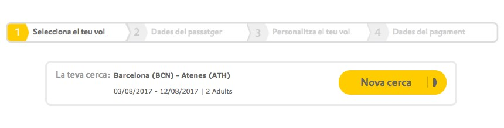
- Mala pràctica: En la web de compra on-line de FNAC, encara que a priori s’indica on es troba l’usuari mitjançant breadcrumbs i títols de pàgina, és confús que no se seleccione cap opció de menú quan es navega per ell.
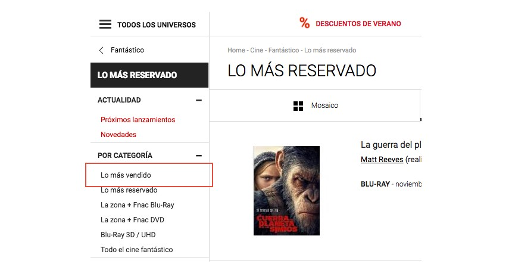
2. Coincidencia entre l’apllicació i el món real
El sistema ha de parlar en el llenguatge de l’usuari, amb paraules, frases i conceptes familiars per a ell. Utilitzar convencions del món real, fent que la informació aparega en un ordre natural i lògic.
- Bona pràctica: En totes les pàgines on s’ha de fer una cerca per data, s’usa (amb més o menys variants) el ja clàssic datepicker. El seu ús i aparença estan tan interioritzats per tots els usuaris, que s’ha convertit en un estàndard.
Així mateix, també ho fa Airbnb en el seu cercador principal.
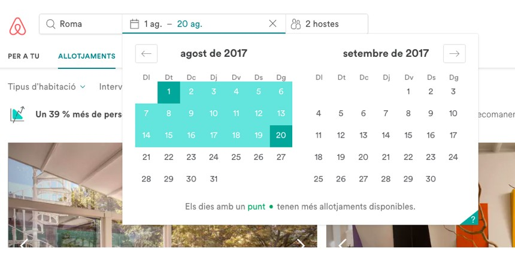
- Mala pràctica: Una molt mala pràctica referent a aquest heurístic, és l’ús d’un vocabulari o argot que no siguen familiars al llenguatge que solen usar els usuaris.Per exemple, en la web de British Airways amb l’idioma ‘espanyol’ seleccionat, el calendari apareix en el sistema anglosaxó, mostrant el ‘Diumenge’ com a primer dia de la setmana. Aquest detall segurament serà confús per a l’usuari hispanoparlant mitjà.
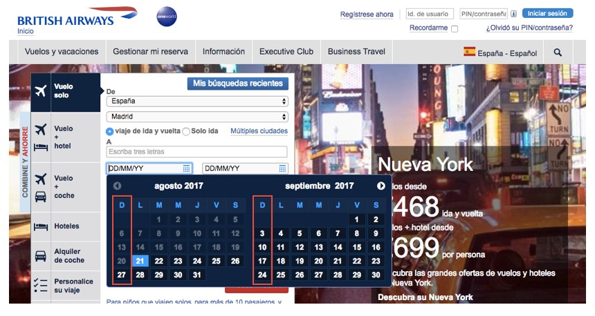
3. Control i llibertat de l’usuari
Sovint els usuaris trien funcionalitats per error i necessiten una ‘porta d’emergència’ per a eixir de l’estat indesitjat. Oferir suport per a desfer i refer accions.
- Bona pràctica: A vegades quan es realitza una acció (com per exemple la de suprimir un producte d’un carret de compra) és millor permetre desfer l’acció que preguntar a través d’un molest avís si realment es vol suprimir aquest producte.
Gmail porta anys permetent desfer l’acció d’enviament de correus electrònics, evitant així aqueixos incòmodes correus amb destinatari erroni.
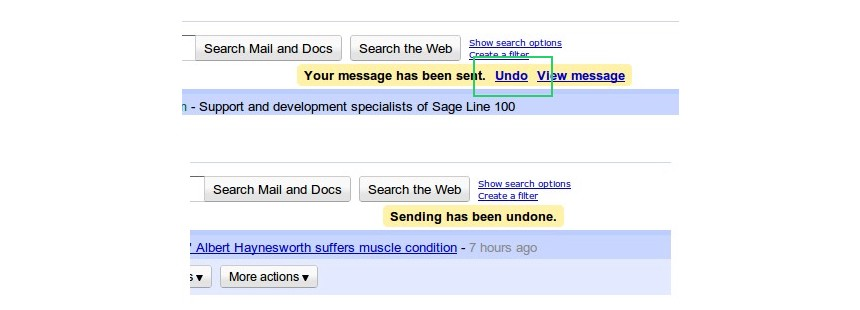
- Mala pràctica: Una mala pràctica molt comuna la trobem en els anuncis en portals de vídeo com Youtube. D’una banda es permet correctament a l’usuari “Saltar l’anunci”, però per l’altre es limita la seua llibertat d’interacció en intentar navegar per la barra de control del vídeo.
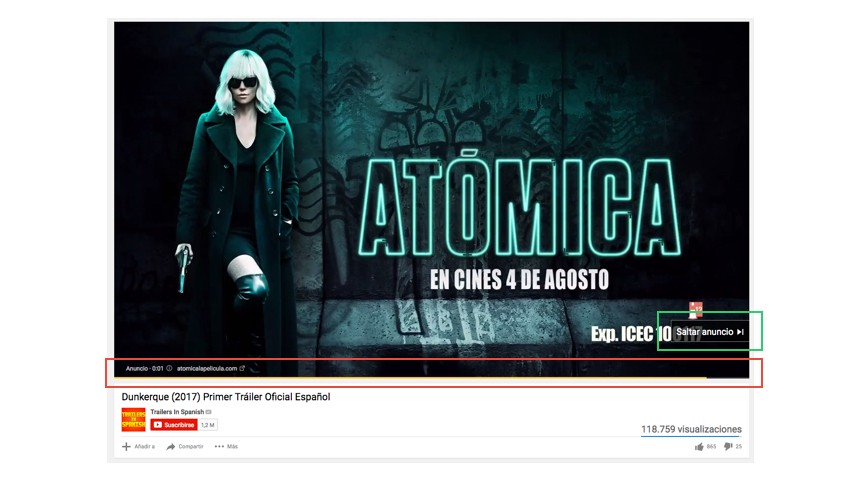
4. Consistència i estàndards
Els usuaris no han d’haver de preguntar-se si les diverses paraules, situacions, o accions signifiquen les mateixa cosa. Que se seguisquen les normes i convencions de la plataforma sobre la qual està implementant el sistema.
- Bona pràctica: La consistència és una de la claus, per no dir LA CLAU, a l’hora de dissenyar UI’s usables. Un element, com per exemple un botó d’acció, ha de veure’s exactament igual en totes les pantalles de la web. Això fa que es limiten el nombre d’accions i operacions que es representen, assegurant que els usuaris no hagen d’aprendre noves funcionalitats en cada tasca que realitzen. Una dels principals avantatges d’utilitzar frameworks de disseny front-end, com per exemple Bootstrap, és que la consistència de tots els seus elements està assegurada.
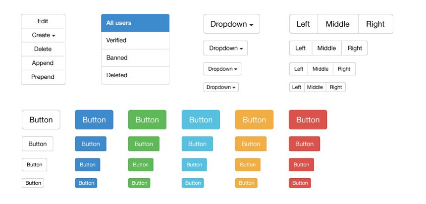
- Mala pràctica: Un mal exemple d’aplicació de la consistència i els estàndards el trobem a la botiga online de Pull&Bear. On situen el formulari de cerca en una zona molt poc comuna per a aquesta finalitat: la part esquerra, just abans del logotip de la marca. Situem sempre els elements on els usuaris esperen trobar-los.
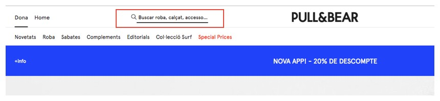
5. Prevenció d’errors
Abans que dissenyar bons missatges d’error, és millor evitar que el problema ocórrega.
- Bona pràctica: Un escenari clàssic on ocorren molts errors és en la validació de formularis. Això ocorre quan no s’informen degudament els requisits de cada camp, i l’usuari obté errors no esperats. Com a exemple de formulari ben dissenyat trobem el del procés de ‘Registre’ de Facebook. On en tot moment s’indiquen els detalls necessaris per a completar cada camp.
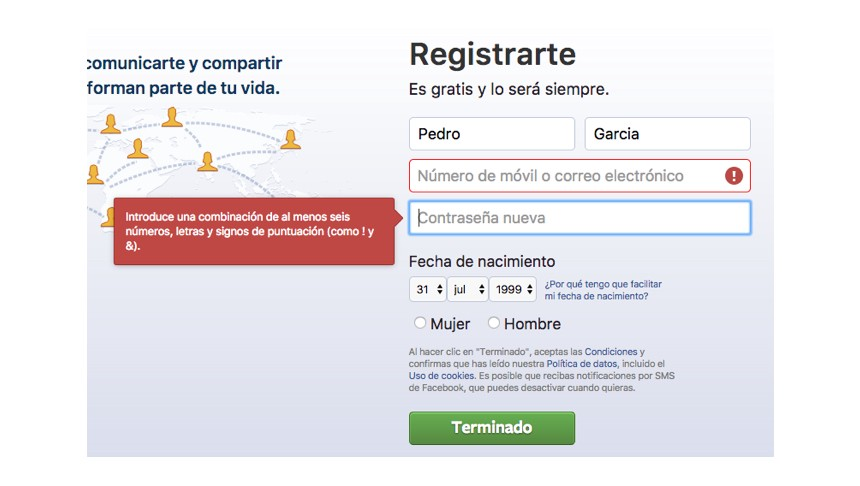
- Mala pràctica: No obstant això, en el formulari d’alta de la web de Correus no s’informa de les característiques que ha de tindre cada camp. Cosa que fa que fins que l’usuari no valida el formulari, aquest no sap que per exemple el camp ‘Contrasenya’ ha de tindre un mínim 8 caràcters.
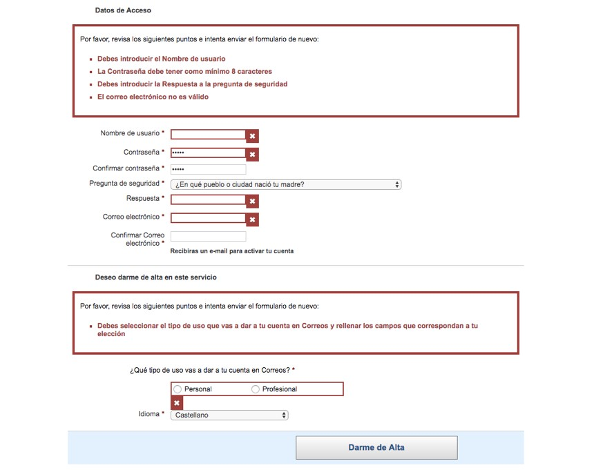
6. Reconeixement millor que recorde
Minimitzar la càrrega de memòria de l’usuari fent que els objectes, les accions i les opcions estiguen visibles. L’usuari no hauria d’haver de recordar la informació d’una part del diàleg a una altra.
- Bona pràctica: Sempre s’han d’indicar els camps pels quals s’ha realitzat una cerca. Per exemple, en la pàgina web d’Atrapalo es mostra una llegenda en la part superior amb els paràmetres pels quals s’ha buscat un hotel.
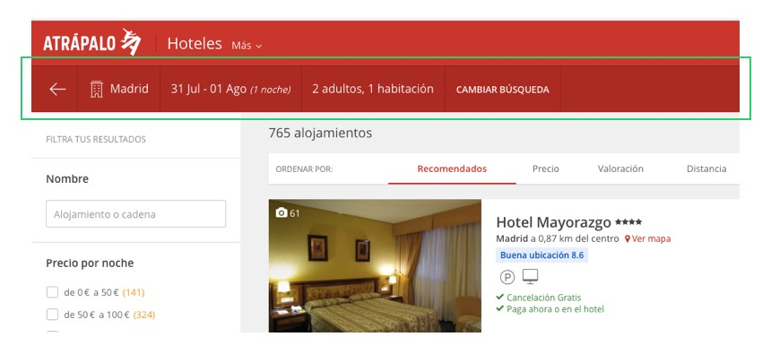
- Mala pràctica: No obstant això, en la web de Wallapop no s’especifiquen clarament els conceptes ni els filtres a manera de resum. Obligant així a l’usuari a revisar diferents zones de la pantalla per a recordar què havia buscat prèviament.
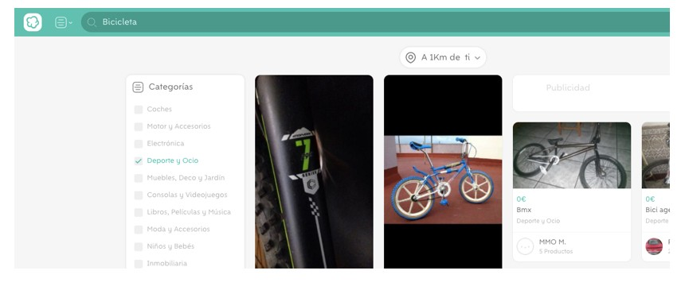
7. Flexibilitat i eficiència d’ús
Els acceleradors, no vistos per l’usuari principiant, milloren la interacció per a l’usuari expert de tal manera que el sistema pot servir per a usuaris inexperts i experimentats. És important que el sistema permeta personalitzar accions freqüents.
- Bona pràctica: Les dreceres de teclat (shortcuts) són el clàssic exemple de ‘acceleradors’ que milloren la interacció dels usuaris experts. Permetent així realitzar accions de manera més ràpida i automatitzada. Per exemple, Twitter, com fan moltes altres webs, proporciona els següents:
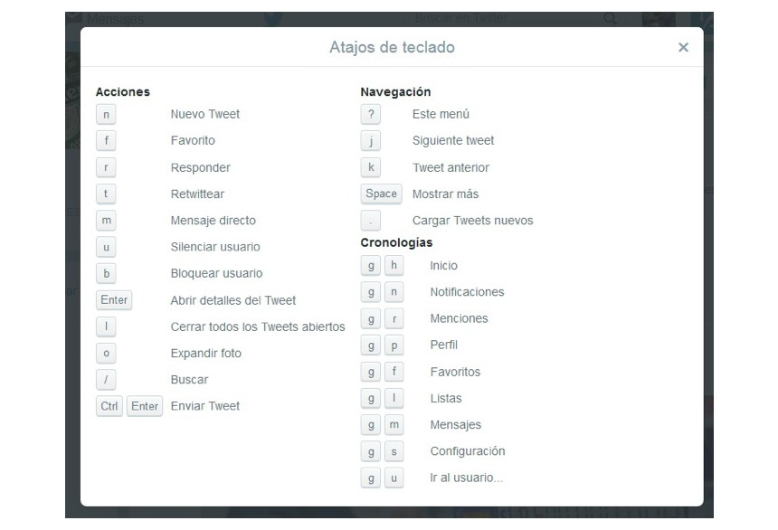
- Mala pràctica: En aquest sentit, s’han d’evitar casuístiques i accions que afecten considerablement al mateix temps que inverteix l’usuari per a dur-les a terme. Per exemple, el típic formulari en el qual si una vegada es valida i existeix un error, s’esborren tots els camps prèviament informats. Comportant que l’usuari perda el temps i en definitiva, la paciència.
8. Disseny estètic i minimalista
Els diàlegs no haurien de contindre informació irrellevant o que es necessite rarament. Cada unitat extra d’informació en un diàleg competeix amb la informació important, disminuint la seua visibilitat relativa.
- Bona pràctica: Menys és més! En el disseny d’una pàgina solament s’ha de mostrar aquella informació que realment és important per a l’usuari. Evitant així, soroll i elements innecessaris que no compleixen amb la fi principal d’aqueixa pàgina. Per exemple, Google porta anys resistint-se a afegir més informació en la seua pàgina inicial. Donant així protagonisme a la seua funcionalitat principal: el cercador.
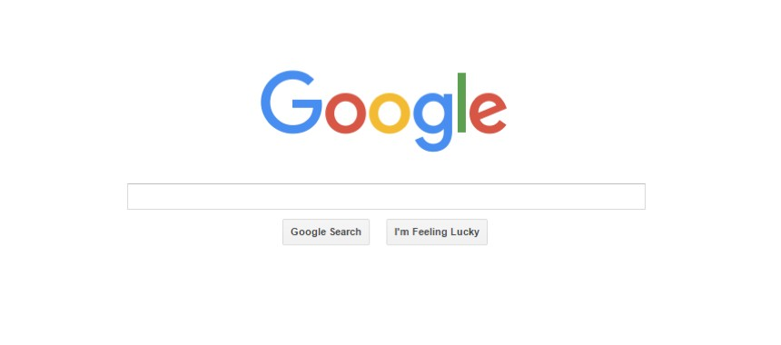
- Mala pràctica: No obstant això el portal Yahoo, encara que haja millorat substancialment el seu disseny en els últims anys, sempre ha presentat una estètica sobrecarregada i amb massa elements.
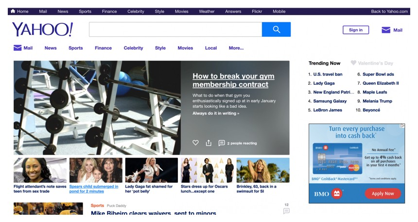
9. Ajudar a reconéixer, diagnosticar i recuperar-se d’errors
Els missatges d’error han d’estar expressats en llenguatge pla (sense codis), indicant amb precisió el problema i suggerint una solució.
- Bona pràctica: Un molt bon exemple de pàgina d’error 404 la trobem en la web oficial de Spotify. On s’informa correctament del problema succeït i de les possibles eixides per a solucionar-lo: “Preguntes freqüents”, “Comunitat” i “Tornar”.
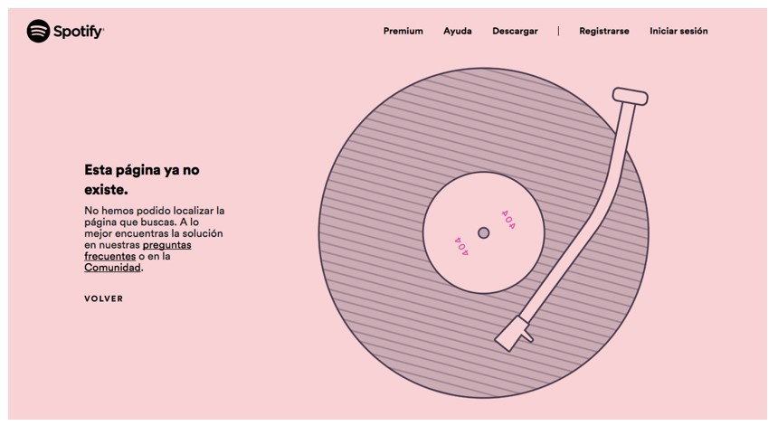
- Mala pràctica: Per l’altre costat, com a exemple de mala pràctica trobem la web de Renfe. On en el procés de compra d’un bitllet, apareixen múltiples missatges d’error amb un sistema de numeració que l’usuari difícilment entendrà.
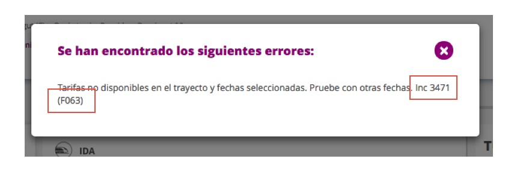
10. Ajuda i documentació
Encara que és millor que es puga usar el sistema sense documentació, és necessari proveir a l’usuari d’ajuda i documentació. Aquesta ha de ser fàcil de buscar, centrada en les tasques de l’usuari, amb informació de les etapes a realitzar i que no siga molt extensa.
- Bona pràctica: El portal Stackoverflow proporciona una detallada secció d’ajuda en la seua ‘Help center’. En una mateixa pàgina es pot trobar un cercador, un mòdul de Onboarding i les F.A.Q’s.
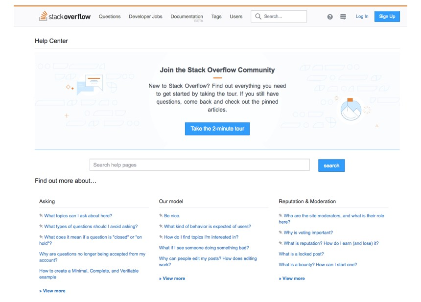
- Mala pràctica: Qualsevol pàgina web que no presente cap secció d’ajuda, documentació o fins i tot de contacte, possiblement provocarà desemparament i incertesa a l’usuari.
back